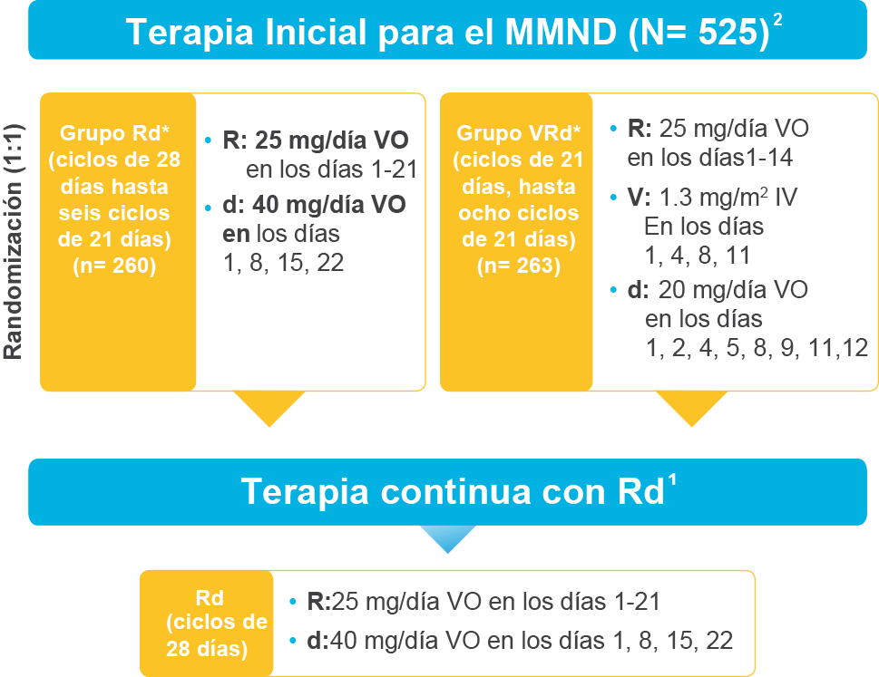

REVLIMID® ES UN TRATAMIENTO BASE
DEMOSTRADO EN EL MMND, AHORA APROBADO
COMO PARTE DE LA TERAPIA TRIPLE CON
REVLIMID EN LOS PACIENTES SIN INTENCIÓN
INMEDIATA DE TRASPLANTE
Un estudio multicéntrico en fase 3, randomizado y abierto en 523 pacientes con MMND1,2
- El estudio comparó a VRd vs. REVLIMID + dexametasona (Rd), seguido por una terapia continua con Rd hasta la progresión, la aparición de toxicidad inaceptable, o el retiro del consentimiento, en pacientes en quienes no se propuso realizar de inmediato un trasplante de células madre.2
- El objetivo primario fue supervivencia libre de progresión (SLP).2
- Los objetivos secundarios incluyen supervivencia global, tasa de respuesta global y seguridad.2
- Ambos grupos fueron bien balanceados. Se estratificó según ISS e intención de trasplante.2
